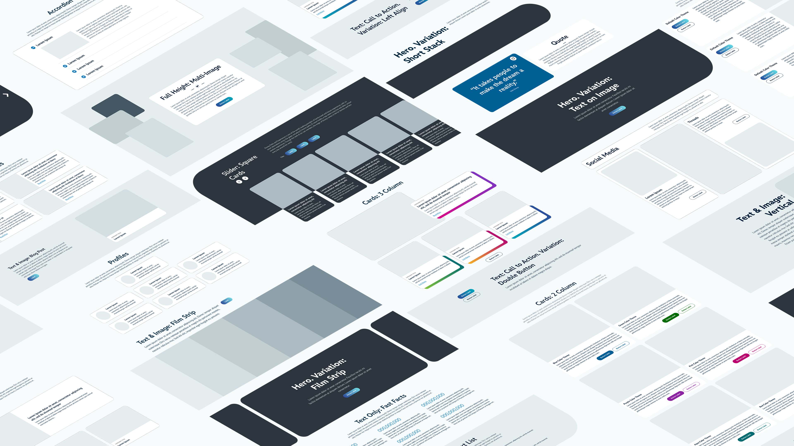
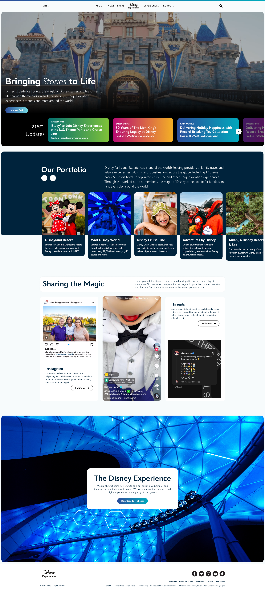
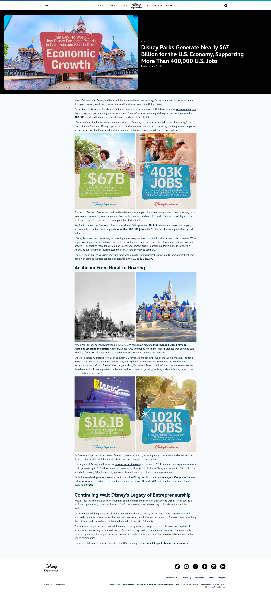
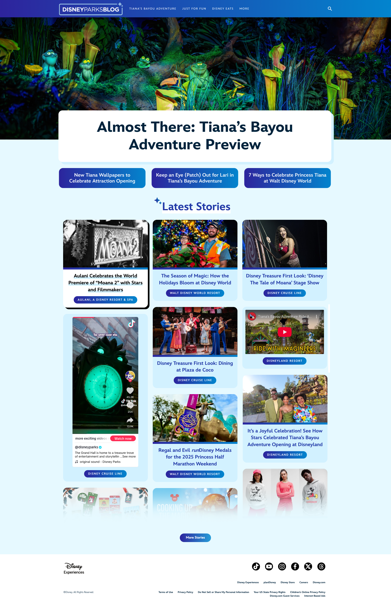
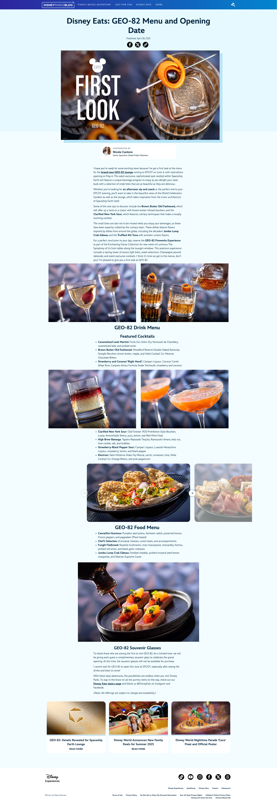

A multi-site WordPress platform empowering Disney Experiences' communications teams to build brand-aligned websites at scale. No developer required.
I led the design and development of Aloha, a bespoke, modular site builder and design system, replacing fragmented site-building approaches with a unified, scalable foundation powering 50+ Disney websites, internal and external, all with different purposes and audiences.
Statement
"Previously, all Disney Experience websites were built with custom solutions, creating a spider web of visual styles and technology stacks. Building and maintaining websites proved costly and outdated with modern SEO practices."
Disney Experiences had something most brands would envy: a globally recognized name and decades of search authority. Yet despite that advantage, independent blogs and competitors were often outranking our official channels and breaking news faster than we were.
Behind the scenes, communications teams were spread across a patchwork of WordPress sites, each with its own design language, technology stack, and publishing workflow. Launching a new site or campaign often required weeks of design, development, and deployment work before content could even reach audiences.
The result was a communications ecosystem that struggled to move at the speed of the stories it needed to tell. In critical moments, including emerging news and crisis communications, teams often couldn't publish quickly enough to lead the narrative with the messaging they intended.
Rather than starting with the technical solution, I started with the people responsible for publishing content. I conducted stakeholder interviews across communications teams to understand where existing platforms were slowing them down and where opportunities existed to improve workflows.
At the same time, I studied how audiences perceived our sites. A key challenge emerged: while every site belonged to Disney, not every site served the same audience. Corporate responsibility, public affairs, press relations, and consumer-facing news all needed distinct identities. We needed a system that helped users immediately understand where they were and what content to expect without sacrificing brand consistency.
This research led to a scalable content taxonomy that could support multiple teams, content types, and publishing goals while creating a clearer information architecture across the ecosystem.
The platform wasn't only a design problem, it was a content strategy problem. I partnered with communications teams to rethink how content was organized, surfaced, and discovered. Through analytics, experimentation, and ongoing testing, we evaluated new content formats and publishing approaches that could better align with user expectations and search behavior.
One notable experiment combined traditional news articles with social media content inside a unified news feed. The approach helped ease adoption by demonstrating a more modern publishing model. Over time, however, analytics revealed that revitalized long-form editorial content was generating significant traffic and engagement on its own. The experiment validated that written content still had a powerful role to play when paired with the right platform and strategy.
These findings influenced both the product roadmap and the broader content strategy, helping teams create experiences that better matched audience intent while increasing search visibility and engagement.
A recurring pattern emerged across Disney's digital products: new experiences were often designed independently of one another, with little consideration for what had come before. This project presented an opportunity to establish a more unified visual language across the organization.
I conducted a comprehensive audit of existing Disney digital experiences to identify the elements that consistently felt "Disney"—rounded forms, expressive color, rich gradients, and playful moments of delight. Using these insights, I developed a design approach that preserved the personality of the brand while creating a foundation flexible enough to serve vastly different audiences.
The goal wasn't uniformity. It was coherence.
The result was far more than a website builder. The platform reduced build times from months to just weeks, allowing communications teams to launch experiences on their own instead of relying on designers, developers, and lengthy delivery cycles for every request. It created a consistent foundation across Disney Experiences sites while giving content creators the freedom to focus on telling stories rather than figuring out technology.
Perhaps the most rewarding outcome was seeing how enthusiastically people adopted it. What began as a solution for a single site quickly spread across departments because it fit the way people actually worked. The platform gave teams a space to be creative, experiment with new publishing strategies, and discover what resonated with their audiences. In the process, it helped demonstrate that products designed around user needs don't just perform better—they become products people genuinely want to use.

One of the biggest technical challenges was Gutenberg itself. While Gutenberg provided a stable, secure, and future-friendly foundation compared to many legacy solutions, it was designed to be a flexible tool for all WordPress users, not specifically for communications professionals managing large-scale Disney properties.
To bridge that gap, I designed a library of more than 50 pre-built content blocks tailored specifically to the types of content our teams created every day. Instead of starting from a blank page, editors could simply choose the pattern that best matched their content—a hero banner, news feed, card grid, icon list, callout section, and dozens more. The goal was simple: let communicators focus on storytelling rather than page construction.
While the platform shared a common foundation, every site still needed to serve a distinct audience. I created flexible design guardrails that maintained accessibility, consistency, and brand standards while allowing each team to express its unique purpose. Consumer-facing sites could leverage richer visuals, bolder colors, and creative assets, while corporate and press-focused properties maintained a more professional and restrained presentation.
This balance allowed audiences to immediately understand what type of content they were engaging with while ensuring every experience still felt unmistakably Disney.




Aloha forever changed the way we thought about our web platforms. The company-wide impact has been immense, occasionally overwhelming. Putting those who maintained and published on our platforms at the forefront is what brought the project success. By prioritzing their needs, putting up guardrails when necessary, and empowering them, we created a suite of sites that are as functional as they are beautiful, and loved by the teams who use it.